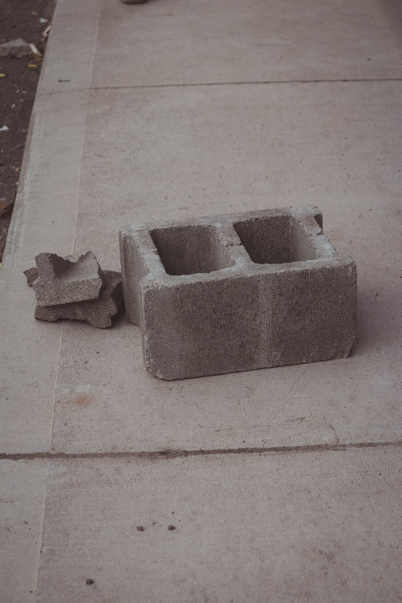

Introducing the all new brick
The brick comes in three styles


Regular brick

This brick is designed to give the client a sense of hierarchy, which is meant to echo the presence of nature in the building. However, through the use of colored bricks in an abstract way, the architects have created a unity between the brick pattern and the natural light that is at the base of the building.
Brick Wall
The brick wall is not only a metaphor. It is so, well, obvious. It's done all the time. It's the safety net. Someone else will do what you can't. Someone else will carry the other end of the barge that is your adult life. I grew up in a home where the word "stop" did not exist. It was never said. I was handed a life that was not my own. There were no choices. There was little voice from within to say "no, I won't do that." No one gave me a map. No one guided my way. I know we all have them, those things that we look back on and think, "what was I thinking?" I have

The last brick you will ever buy

Designed not only to last but to evolve